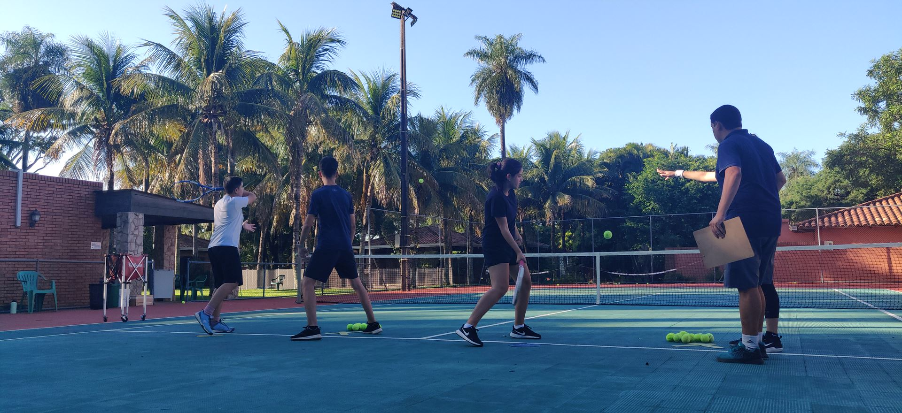
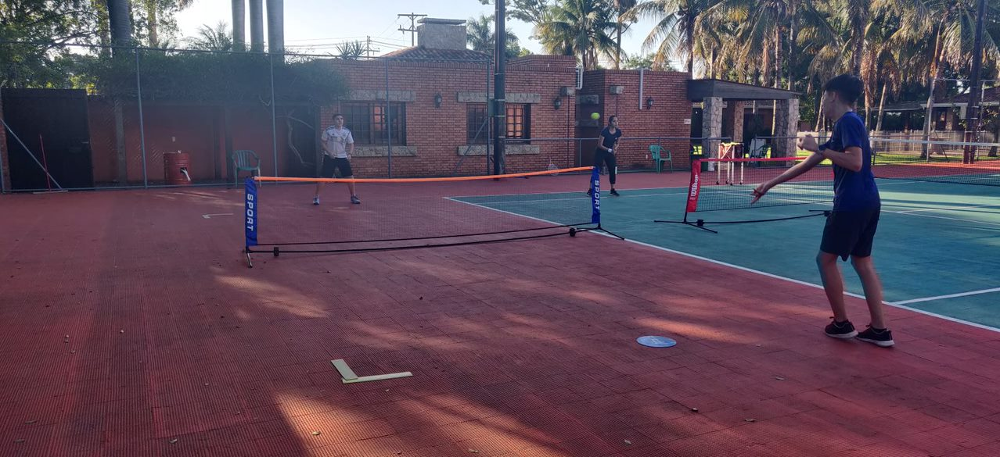
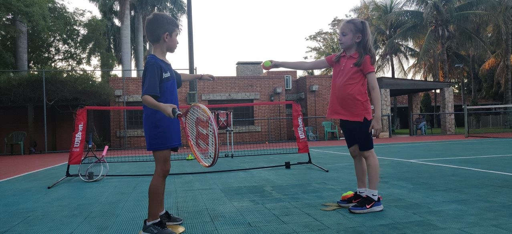
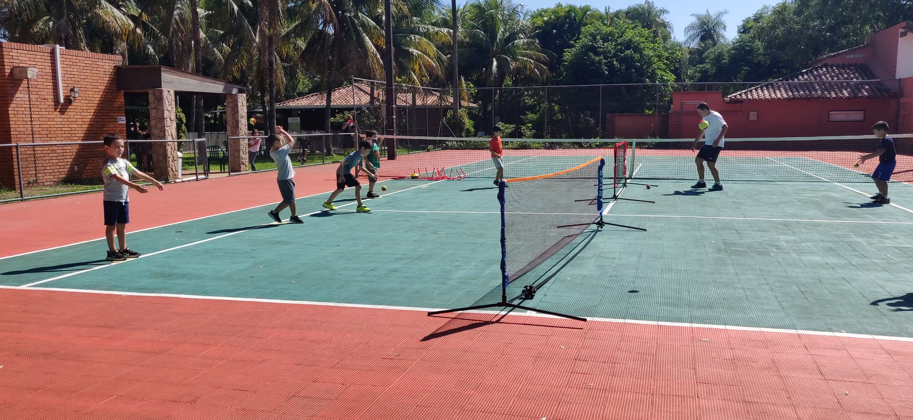
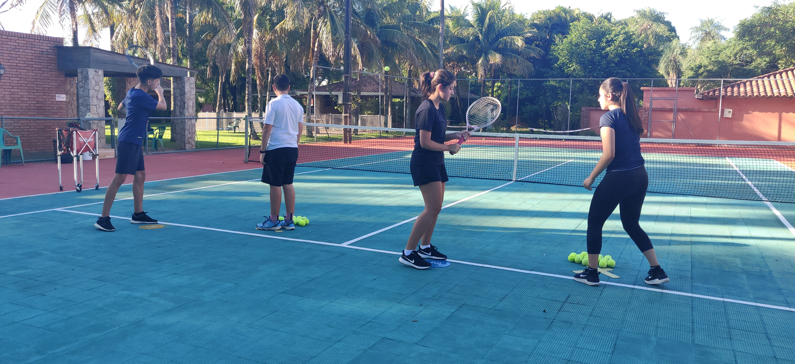

Que es Tenis Progresivo?
Una introducción divertida e interactiva al tenis.
Tenis Personalizado Para la Edad y Habilidad de su Hijo
Garantiza el entrenamiento completo de tenis y fitness de un jugador para que conduzca al maximo desarollo atletico.
Desarolla habilidades tacticas para la toma de decisiones.
Aprende tenis mas facilmente, juegue mas rapido y desarrolle un amor por el juego mas temprano.
Diversion y Exito Temprano

El Equipamiento Proporcional
Apoya el tamaño de los atletas más jóvenes y ayuda en el desarrollo general de los fundamentos del juego.
Tamaño de la cancha.
El tamaño de la cancha es proporcional al tamaño del niño..
Ayuda a los jugadores jóvenes a desarrollar un juego en toda la cancha al garantizar una cobertura realista de la cancha..
El tamaño proporcionado de la cancha permitirá a los niños desarrollar tácticas similares a las tácticas avanzadas que usarán en una cancha completa cuando crezcan.
Desarrola las coordinaciones y cooperaciones básicas, juego y devolución ayuda a aprender los golpes básicos y los fundamentos..

Tamaño de la pelota
La pelota progresiva se mueve a través de la cancha más lentamente y rebota más bajo.
El uso de la pelota progresiva también promueve rallies más largos y la importancia general de la consistencia.
Los jugadores jóvenes pueden recibir y proyectar la pelota más fácilmente, lo que ayuda a el desarrollo de fundamentos técnicos adecuados (agarre, puesta a punto, punto de impacto, zona de golpeo y recuperación).
Tamaño de la raqueta
El tamaño adecuado de la raqueta (longitud y peso) garantizará el control, la estabilidad y la estabilidad de la cabeza de la raqueta. Sentir el balón cuáles son los factores más importantes en el control del balón.
Previene lastimaduras que ocurren con raquetas mas grandes
Competicion a Edad Temprana

Instrucción experta y un programa estructurado
Una base sólida en los fundamentos del tenis.
Metodo de ensenhanza que es Segura, exitosa y mas divertida.
Este método de jugar al tenis está hecho para tener beneficios inmediatos.
Para los padres
Instrucción experta y un programa estructurado
Una base sólida en los fundamentos del tenis.
Metodo de ensenhanza que es Segura, exitosa y mas divertida.
Este método de jugar al tenis está hecho para tener beneficios inmediatos.
Los niños aprenderán rápidamente y comenzarán a pasar un buen rato en la cancha de inmediato.
Esto asegurará que estén emocionados de volver y jugar tenis la próxima semana.
También los mantendrá abiertos a probar cosas nuevas, siguiendo las reglas del juego recién aprendidas y escuchando a los instructores
Salud

Ejercicio aeróbico
Construye un corazón sano y reduce el riesgo de enfermedades del corazón más adelante en la vida
El tenis es excelente para hacer que la sangre bombee durante el ejercicio.
Después del enfriamiento, su hijo estará más feliz y relajado. Esto reduce su frecuencia cardíaca en reposo y su presión arterial, lo que los convierte en personas más saludables en general.
Desarrolla la densidad muscular y ósea para mantener a los niños fuertes, en forma y delgados.
Jugar al tenis mantiene alto el metabolismo de los niños, lo que reduce el riesgo de obesidad y (en el futuro) enfermedades relacionadas con la obesidad, como la diabetes.
Mentalmente
Mejora la coordinación y combatir problemas de salud mental como la depresión
Los estudios muestran que cuando las personas son más activas, son más felices y saludables en general
Los niños estarán menos solos y aislados gracias a los amigos con los que juegan al tenis, mejorando las habilidades sociales y permitiéndoles formar conexiones profundas con otras personas de su misma edad